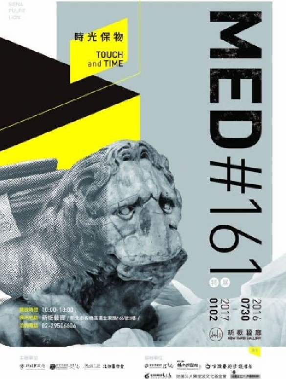

MED#161 時光保物 Touch and Time

主辦單位：
新北市政府、新北市政府文化局、北師美術館協辦單位：
新北市政府教育局、國定古蹟林本源園邸、國立臺灣藝術大學古蹟修護藝術系、正修科技大學藝文處文物修護中心、財團法人陳澄波文化基金會、小典藏活動日期：
105年7月30日（六） - 106年1月2日活動時間：
10：00 - 18：00活動地點：
新板藝廊 ( 新北市板橋區漢生東路166號3樓 )電話：
02-2950-6606臺灣對於文物保護意識逐漸抬頭，但對大眾來說，談文物保存及修護也許還是有點陌生，新北市政府文化局與北師美術館共同推出「MED#161 時光保物」特展，以「開放修護室」及「參與學習」為概念，展出紐約大都會博物館百年石膏模製品，及林本源園邸的百年木構件，透過探索、體驗、遊戲的方式，帶領各年齡層的大小朋友，深入淺出地認識文物保存及修護過程。
本次展出的百年作品，石膏模製品為大都會美術館長期借展北師美術館的作品，包括從中世紀到19世紀間歐陸經典的雕刻作品或建築構件，以原尺寸模製，且當時都被視為重要的作品於大都會博物館展示；而林本源園邸的木構件，則是由新北市文化局所保存，充分展現出臺灣傳統建築的經典雕刻。百年後的今日，民眾將可以在本次展覽以前所未有的近距離，親近東西方建築中的經典作品及修護過程。
展覽教育活動
小小修護師體驗活動
場次：
07/30(六)│08/06(六)│08/07(日)14:00、16:00│08/01 (一) - 08/05(五) 14:00對象：
6-12歲兒童，家長須全程陪同人數：
每場10位兒童生病的時候我們會去找醫生，那藝術品生病了該怎麼辦呢？大、小朋友共同穿上工作服，走進難得一見的文物修護室，從作品的檢視登錄，到實際動手清潔，親身體驗百年石膏模製品的修護過程，你就是未來的小小修護師！
聽見畫的聲音：《會說話的畫》繪本說故事
場次：
07/30(六)│08/07(日)│08/21(日) 15:00對象：
4-8歲兒童，家長須全程陪同人數：
每場15位兒童在溫暖和煦的午後，老奶奶曬著畫，一旁玩耍的小男孩居然聽見一群畫在說話。長大後的小男孩成了修護師，這次他又聽見畫的聲音，到底它們說了些什麼呢？國內首部以油畫修復師為主題的繪本，這是一本關於時間浸潤、記憶與情感的故事，說給孩子聽，也給你我心裡的孩子曬曬暖陽。
時光保物：互動冒險故事坊
場次：
08/27(六)│09/24(六)│10/22(六)│11/26(六)│2/24(六) 10:30、15:30對象：
上午場為7-9歲兒童，下午場為3-6歲兒童，家長須全程陪同人數：
每場20位兒童打開盒子會看到什麼？髒髒舊舊、卻仍無法丟棄的珍藏寶貝，以及一湧而上的美好時光與回憶。今年夏天，讓我們一起探索冒險，在聆聽故事中成長、在肢體律動中自由，走進文物修護與保存的無垠世界裡，讓珍藏的寶貝繼續閃亮下去！